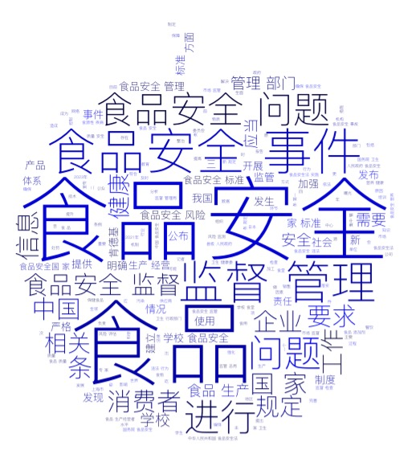

Nuages
Nuage de mots - chinois

Ce nuage de mots contient des termes importants liés au sujet de « 食品安全sécurité alimentaire ».
Le terme « 健康santé » explique le moteur principal des discussions sur la sécurité alimentaire. Il s’agit de la préservation de la santé individuelle et publique.
D’autres mots proéminents, tels que « 生产经营者producteurs », « 企业entreprises », « 肯德基KFC », « 市场marché » et « 产品produits » indiquent que, les problèmes de sécurité alimentaire sont présents à la fois dans la production et dans la vente de produits alimentaires.
Les termes « 家maison » et « 学校école» représentent les lieux fréquents où se posent des questions de sécurité alimentaire.
Les termes tels que « 体系système », « 严格strict », « 标准 normes » et « 完善perfectionner » soulignent l'urgence de mettre en place un système solide de sécurité alimentaire. Il est aussi important d'établir des normes strictes et de perfectionner les mécanismes de régulation. Tandis que les mots « 监督surveillance » et « 管理gestion » représentent l'importance de la mise en œuvre efficace de la sécurité alimentaire.
Dans l'ensemble, ces mots clés offrent de différentes perspectives, mettant en évidence la préoccupation et les discussions étendues sur la sécurité alimentaire sur les sites web chinois.